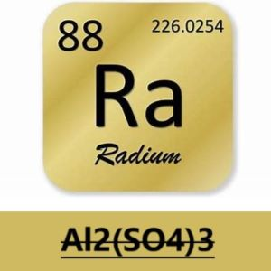
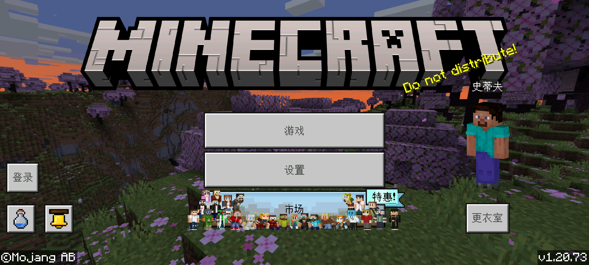
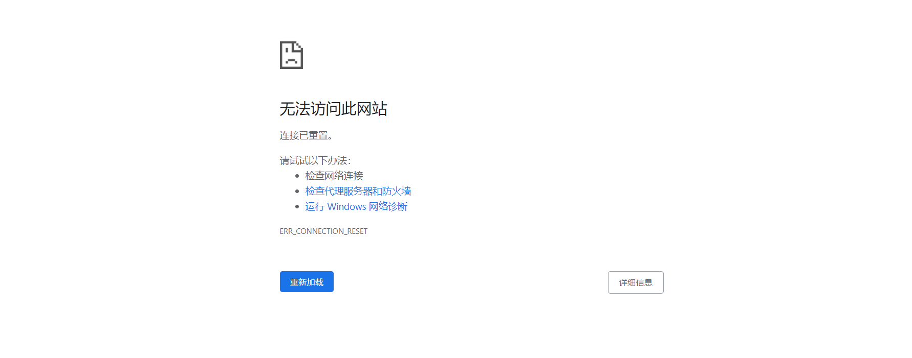
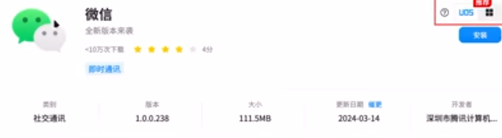
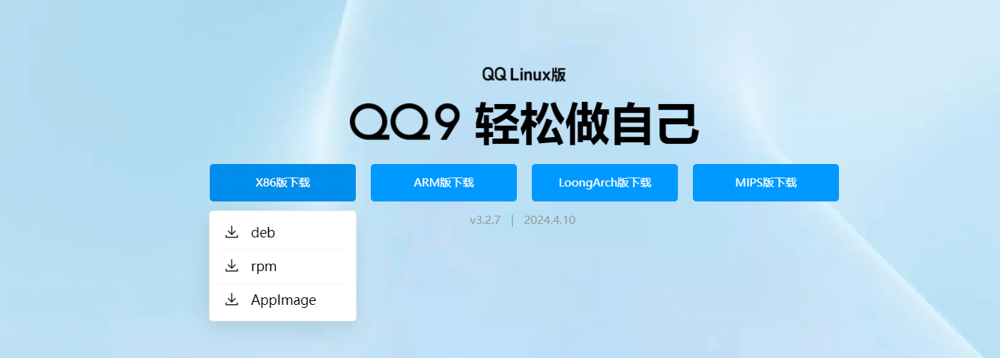
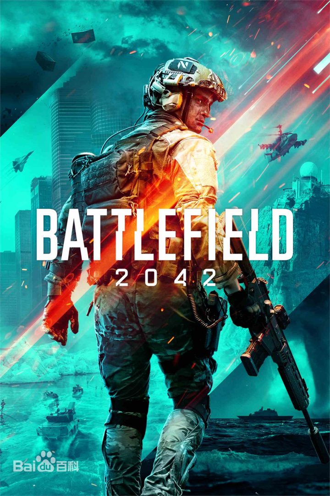

硫酸铝的新闻站
本新闻站模板代码取自『[PCL2新闻主页]:https://github.com/Light-Beacon/PCL2-NewsHomepage (作者:最亮的信标)』.
本新闻站主要记录由Al2(SO4)3-硫酸铝整理的部分消息,内容多与其本人关注点有关,并不是那些正式的新闻站,请您了解.
本新闻站内容仅供参考,请勿用于商业用途,内容可能已经过时,请谨慎参考.

MCBE-1.20.73更新
简介:1.20.73是基岩版的一次次要更新,在除Nintendo Switch和Xbox外的平台上发布于2024年4月1日,修复了一个崩溃.此版本与1.20.70至1.20.72相互兼容.
内容:修复了游戏过程中可能发生的崩溃.
版本:正式版更新

Koyeb容器部分APP实例无法访问
大约从2024.4.11开始,koyeb的部分APP实例无法正常访问,但是一直到2024.4.12,koyeb本体一直可以正常访问.
值得注意的是,这些无法访问的实例依然可以ping通,但是使用浏览器访问就不行,vsping.com检测部分koyeb实例全部超时.
截止到2024.4.12.14:00,问题依然没有解决.

Wechat for linux
在长久的等待后,微信终于宣布推出了Linux版本,这对于Linux用户来说无疑是一大喜讯(这不是wine运行的微信,是真的官方版linux系统下的微信).
尽管功能不算完善,但是后面应该会慢慢维护好的.
目前在微信官网并没有发现相关内容.

QQ for linux
QQ Linux-3.2.7已于2024.4.1发布.
新增:(体验)桌面端&移动端聊天记录迁移、查看消息发送时间等实用功能,(QQ群)新增群头像设置、头衔展示、屏蔽指定成员,(频道)简化频道列表，新增帖子广场，新增发短贴等能力.
优化:大量体验优化功能发布，如优化发在线文件夹体验、群成员展示等多功能.

战地2042赛季停更
EA宣布停止《战地2042》的赛季更新,第7赛季将是游戏的最后一个赛季.
具体消息:2024年4月9日,《战地》总经理拜伦•比德(Byron Beede)于《战地2042》英文官网发布新闻,宣布不再推出赛季更新.
官方承诺继续为《战地2042》提供支持,将剩余内容的更新日程排到了两个月后,其中包括游戏内的挑战、活动、模式,一张从旧有地图中抠出来并重制的小型地图,以及一种新型固定翼飞机——隐身无人轰炸机.